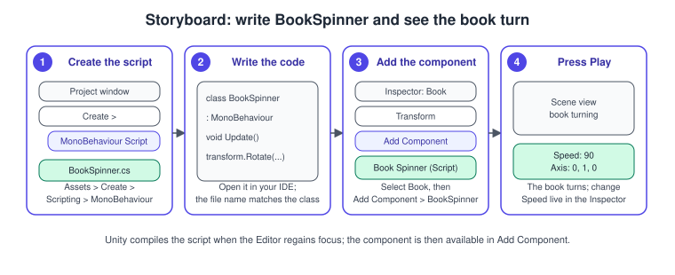
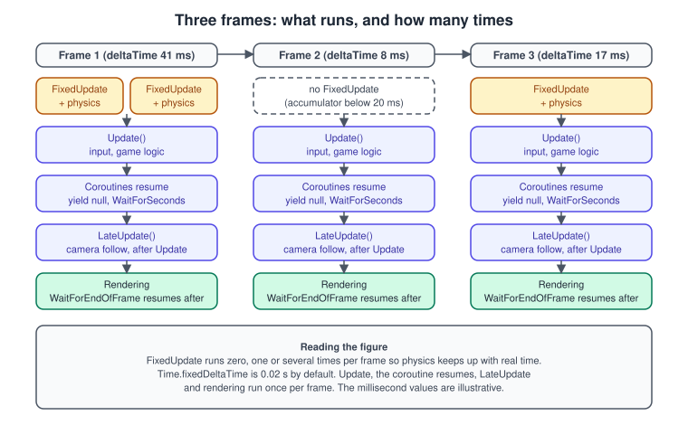
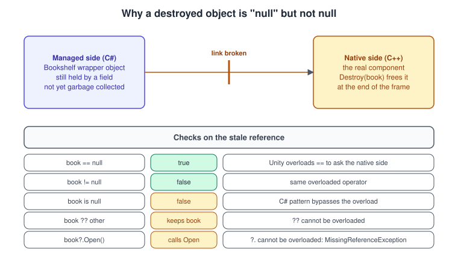
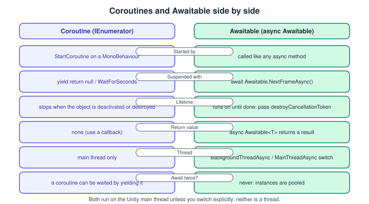
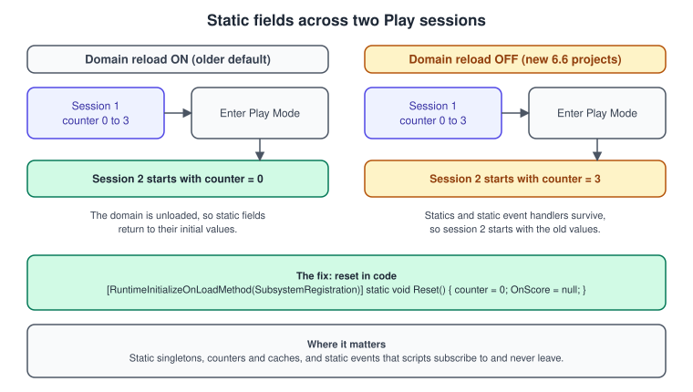

C# Scripting and the MonoBehaviour Lifecycle
|
This content was generated with the assistance of AI and should be verified against the official documentation before being relied on in production. |
A Unity game is mostly C# classes that derive from MonoBehaviour, attached to GameObjects, and called by the engine at precise moments of every frame. Writing them well means knowing three things: the order in which Unity
calls your methods, what the engine does and does not save and restore for you, and how a Unity object differs from an ordinary C# object when it is destroyed. This page covers those three, then the two ways of spreading work
over several frames (coroutines and Awaitable), and finally the Editor’s Play Mode settings, which decide whether the static fields you wrote survive from one test run to the next.
The facts were checked in November 2026 against the documentation of Unity 6.3 LTS (6000.3), the version documented in this section. Where Unity 6.6 (6000.6), the latest supported release, changes the behaviour, the text says so; the
most important change for scripting is that new projects created with Unity 6.6 no longer reload the scripting domain when entering Play Mode. The code runs in the Editor and in players on every platform Unity supports (Windows, macOS,
Linux, iOS, Android, Web and consoles) and needs no package besides the default ones. The running example is the Bookshelf (a Book prefab on a shelf, in a URP 3D project); the shared model is
bookshelf.glb. The general concepts behind this page are in Game Loop and Frame Timing; the C# language itself is covered in the
C# classes and objects page and its neighbours, which this page does not repeat.
The MonoBehaviour model
MonoBehaviour is the base class for scripts that you attach to a GameObject as a component. Unity creates the instance for you (you never write new for a MonoBehaviour), serializes its fields into the scene or prefab, and
calls its event functions (also called messages) by name when something happens. The name is the contract: Update is called because the method is called Update, not because it overrides anything. A method with the wrong
spelling or case silently never runs, which is the most common beginner bug.
using UnityEngine;
namespace Bookshelf
{
/// <summary>Turns the book it is attached to around a configurable axis.</summary>
[DisallowMultipleComponent]
public class BookSpinner : MonoBehaviour
{
[Header("Spin")]
[SerializeField, Tooltip("Degrees per second.")]
private float speed = 90f;
[SerializeField]
private Vector3 axis = Vector3.up;
[SerializeField]
private Space space = Space.Self;
private void Update()
{
// Multiply by deltaTime so the speed is in degrees per second, not per frame.
transform.Rotate(axis.normalized * (speed * Time.deltaTime), space);
}
}
}Source: Unity Manual: Creating scripts
Three details of that listing matter later. The class name must match the file name (BookSpinner.cs) or Unity cannot attach the script. The fields are private but marked [SerializeField], so they appear in the Inspector and are
saved with the scene, without being part of the class’s public API. And Update is private: event functions can have any access level, and Unity finds them through reflection at load time.
To put the script on the book:
-
In the Project window, choose Assets > Create > Scripting > MonoBehaviour Script and name the file
BookSpinner. -
Open the file, replace its content with the listing above and save. Unity recompiles when the Editor regains focus.
-
Select the
Bookobject in the Hierarchy, then choose Add Component in the Inspector and pick Book Spinner. -
Press Play. The book turns; change Speed in the Inspector while playing to see the effect immediately. Values changed in Play Mode are discarded when you stop.
Source: Unity Manual: Creating scripts

The lifecycle and the execution order
Every MonoBehaviour passes through the same stages. The diagram shows the callbacks you will use daily; the full chart in the manual adds rendering, animation and editor-only callbacks.
The rules behind the diagram:
-
Awakeruns once per component, when the object is created or its scene loads, even if the component itself is disabled, but not while the GameObject is inactive. Use it to initialise the component’s own state and to cache references to its own siblings. -
OnEnableruns every time the component becomes enabled (including right afterAwake). Pair it withOnDisable: subscribe to events and register in one, unsubscribe and unregister in the other. -
Startruns once, just before the first frame in which the component is updated, and only if the component is enabled. By then everyAwakeandOnEnableof the objects loaded together has run, soStartis the place to talk to other objects. -
Update,LateUpdateandFixedUpdateare the three per-frame callbacks, explained below. -
OnDisableandOnDestroyend the life of the component.OnDestroyruns for a component that was destroyed or whose scene was unloaded; it is not a good place to create or find objects. -
The order between two different objects'
Awake(orStart, orUpdate) is not defined. If one script must run before another, say so: put[DefaultExecutionOrder(-100)]on the script that must go first, or set the order in Project Settings > Script Execution Order. Prefer designs that do not depend on the order, such as the initialisation split betweenAwake(self) andStart(others). -
Unity raises
SceneManager.sceneLoadedafterOnEnableand beforeStartof the objects in the loaded scene.
The following component writes the order to the Console, which is the quickest way to see it in your own project. Add it to two objects and read the Console.
using UnityEngine;
namespace Bookshelf
{
/// <summary>Logs each lifecycle callback once, so the order can be inspected in the Console.</summary>
[DefaultExecutionOrder(-50)]
public class LifecycleLogger : MonoBehaviour
{
private int fixedCount;
private bool loggedUpdate;
private bool loggedLate;
private void Reset() => Log("Reset (Editor only, when the component is added)");
private void OnValidate() => Log("OnValidate (Editor only, when a value changes)");
private void Awake() => Log("Awake");
private void OnEnable() => Log("OnEnable");
private void Start() => Log("Start");
private void FixedUpdate()
{
if (fixedCount++ < 2) Log("FixedUpdate #" + fixedCount);
}
private void Update()
{
if (loggedUpdate) return;
loggedUpdate = true;
Log("Update (first)");
}
private void LateUpdate()
{
if (loggedLate) return;
loggedLate = true;
Log("LateUpdate (first)");
}
private void OnDisable() => Log("OnDisable");
private void OnDestroy() => Log("OnDestroy");
private void Log(string message) =>
Debug.Log($"[{name}] frame {Time.frameCount}: {message}", this);
}
}The second argument of Debug.Log is the context object: clicking the line in the Console highlights the component that wrote it.
Update, FixedUpdate and LateUpdate

-
Updateruns once per rendered frame. Put input reading, timers and movement that is not driven by physics here. The time between two calls varies, so every rate must be multiplied byTime.deltaTime. -
FixedUpdateruns on the physics clock, at a fixed interval (Time.fixedDeltaTime, 0.02 s unless changed in Project Settings > Time). If a frame took longer than the interval, Unity calls it several times to catch up; if the frame was short, it may not call it at all. Apply forces and set velocities of aRigidbodyhere, and read input inUpdate, store it in a field, and consume it inFixedUpdate. See 3D Physics. -
LateUpdateruns after allUpdatecalls of the frame. Use it for things that follow others, such as a camera that tracks a character that moved inUpdate, so the camera never lags a frame behind.
The same split exists in every engine’s loop (variable-step rendering, fixed-step simulation): see Game Loop and Frame Timing and Physics, Audio and Input Basics.
Time
| Property | Meaning | Use it for |
|---|---|---|
|
Seconds the previous frame took, scaled by |
Movement, rotation and timers in |
|
The same, ignoring |
UI animation and menus while the game is paused |
|
Interval of the physics clock |
|
|
Speed multiplier of game time; 0 pauses |
Pause, slow motion |
|
Upper bound on the time one frame is allowed to advance the game |
Prevents the "spiral of death" after a hitch |
Two common mistakes: forgetting Time.deltaTime (the book spins twice as fast on a 120 Hz display), and multiplying by it twice when the value is already per-second (for example, Rigidbody.linearVelocity is a velocity: assign
it, do not scale it by deltaTime).
Reaching other components
Components of one GameObject find each other with GetComponent. The call searches the object, so it is slower than reading a field: do it once and keep the result.
using UnityEngine;
namespace Bookshelf
{
[RequireComponent(typeof(Rigidbody))]
public class BookPicker : MonoBehaviour
{
[SerializeField] private Renderer coverRenderer; // assigned in the Inspector: no search needed
private Rigidbody body;
private static readonly int BaseColor = Shader.PropertyToID("_BaseColor");
private MaterialPropertyBlock block;
private void Awake()
{
// RequireComponent guarantees the Rigidbody exists, so GetComponent cannot return null here.
body = GetComponent<Rigidbody>();
block = new MaterialPropertyBlock();
}
public void Highlight(bool on)
{
coverRenderer.GetPropertyBlock(block);
block.SetColor(BaseColor, on ? Color.yellow : Color.white);
coverRenderer.SetPropertyBlock(block);
}
public void Throw(Vector3 impulse) => body.AddForce(impulse, ForceMode.Impulse);
// Optional component: TryGetComponent does not allocate in the Editor when the component is missing.
public bool TryGetShelfSlot(out Collider slot) => TryGetComponent(out slot);
}
}The ways to get a reference, from the cheapest to the most expensive:
| Technique | Notes |
|---|---|
A |
No runtime cost, visible in the scene, survives refactoring. The default choice. |
|
One search per component per lifetime. Pair with |
|
For optional components: no exception, no Editor allocation when missing. |
|
Search the hierarchy (they include the object itself; inactive objects are ignored unless you pass |
|
Search the whole scene. Use once at start-up for a scene-wide service, never in |
|
Tag test without allocating the tag string, unlike |
FindAnyObjectByType returns any matching object quickly; FindFirstObjectByType returns the first in hierarchy order and is slower, so prefer the former when there is exactly one. Both take a FindObjectsInactive
argument to include inactive objects. Dedicated lookups for several objects are FindObjectsByType with a FindObjectsSortMode (use None unless the order matters).
Serialization: what Unity saves
Unity does not save your objects with .NET serialization. It has its own serializer, which writes the fields of scripts into scenes, prefabs and assets, and into the domain reload snapshot described later. A field is serialized when it is:
-
public, or has[SerializeField]; -
not
static,constorreadonly; -
of a serializable type: primitives, enums, strings, Unity types such as
Vector3,Color,AnimationCurve, references toUnityEngine.Object(components, assets, GameObjects),[Serializable]structs and classes, and arrays orList<T>of those.
Properties are not serialized (an auto-property needs [field: SerializeField] to save its hidden field), and neither are fields of the wrong type or with [NonSerialized].
using System;
using System.Collections.Generic;
using UnityEngine;
using UnityEngine.Serialization;
namespace Bookshelf
{
[Serializable] // required for custom structs and classes
public struct BookStyle
{
public Color cover;
public Color spine;
[Range(0f, 1f)] public float wear;
}
[Serializable]
public class BookExtra { public string note; }
public class BookAppearance : MonoBehaviour
{
[SerializeField] private BookStyle style; // saved inline, shown as a foldout
[SerializeField] private List<string> tags = new(); // lists work, default values are kept
[field: SerializeField] public string Title { get; private set; } = "Untitled"; // property backing field
[FormerlySerializedAs("shelfNumber")] // keeps old data after a rename
[SerializeField] private int shelfIndex;
[NonSerialized] public float runtimeDust; // public, but not saved or shown
[HideInInspector] public int lastSlot; // saved, but hidden from the Inspector
[SerializeReference] private BookExtra extra; // by reference: can be null or a subclass
private void OnValidate()
{
// Called in the Editor whenever the values change: clamp and fix inputs here.
shelfIndex = Mathf.Max(0, shelfIndex);
}
}
}Things that surprise people:
-
A custom class stored in a field is serialized inline, by value: two fields that point to the same object become two separate copies after a save. Use
[SerializeReference]when the same instance must be shared, when the field can benull, or when the field holds different subclasses. -
Unity does not serialize nested containers (an array of arrays, or a
List<List<int>>) or, in Unity 6.3, dictionaries; wrap the inner type in a[Serializable]class, or implementISerializationCallbackReceiver. Since Unity 6.6, a[SerializeField]dictionary field on a MonoBehaviour, a ScriptableObject or a nested serializable type is saved directly. -
Renaming a serialized field loses its stored value unless
[FormerlySerializedAs]carries the old name. -
A field initializer such as
= new()only supplies the value for newly added components; objects already saved keep their stored value. -
Very large arrays belong in a ScriptableObject or a separate file, not in a scene.
The practical consequence is that your scripts must keep two kinds of state apart: authored state (serialized, edited in the Inspector, identical in every run) and runtime state (private, recreated in Awake and Start).
This separation is the basis of ScriptableObjects and Data-Driven Design and of saving a game
(see Saving, Loading and HTTP Networking).
Destroyed objects and Unity’s null
Every UnityEngine.Object (a GameObject, a component, a material) is a thin C# wrapper around a native C++ object. Destroy(obj) frees the native object at the end of the frame, but the managed wrapper stays in memory until the
garbage collector collects it, and any field that still points to it remains non-null in C# terms.

To make the common case behave, Unity overloads ==, != and the implicit bool conversion of UnityEngine.Object: a wrapper whose native object is gone compares equal to null. The overload cannot cover operators that C# does
not allow to be overloaded, which is the source of most "my null check does not work" bugs.
using UnityEngine;
namespace Bookshelf
{
public class DestroyedObjectDemo : MonoBehaviour
{
[SerializeField] private GameObject book;
private void Start()
{
Destroy(book); // the native object dies at the end of this frame
}
private void Update()
{
if (book == null) // true once destroyed: uses Unity's overloaded ==
Debug.Log("book is gone");
if (!book) // equivalent: the implicit bool conversion
Debug.Log("book is gone (bool)");
if (book is null) // false for a destroyed object: bypasses the overload
Debug.Log("never printed while the stale reference exists");
book?.SetActive(false); // BAD: ?. does not see the destruction and throws MissingReferenceException
if (book != null) book.SetActive(false); // correct
}
}
}Rules that follow:
-
Never use
?.,??,??=oris nullon a UnityEngine.Object. Use== null,!= null,if (obj)orTryGetComponent. -
In the Editor, an unassigned
[SerializeField]field may hold a "fake null" placeholder (so that the Inspector can say which field is missing);== nullis stilltrue. -
Destroying a MonoBehaviour or ScriptableObject is final: Unity never recreates it, unlike most other object types.
-
The overloaded comparison costs a native call. In a hot loop, test once and cache the result, or keep a plain C# list of live objects.
Coroutines
A coroutine is a method that returns IEnumerator and contains yield return. Unity runs it up to the first yield, remembers where it stopped and resumes it later, on the main thread, when the yielded condition is met.
It is the classic way to do something over several frames without writing a state machine.
using System.Collections;
using UnityEngine;
namespace Bookshelf
{
public class ShelveFlash : MonoBehaviour
{
[SerializeField] private Renderer coverRenderer;
[SerializeField] private float duration = 0.4f;
private static readonly int BaseColor = Shader.PropertyToID("_BaseColor");
private static readonly WaitForEndOfFrame EndOfFrame = new(); // cached: yields allocate otherwise
private MaterialPropertyBlock block;
private Coroutine running;
private void Awake() => block = new MaterialPropertyBlock();
public void Play()
{
if (running != null) StopCoroutine(running); // never run two fades on the same object
running = StartCoroutine(Flash());
}
private IEnumerator Flash()
{
for (float t = 0f; t < duration; t += Time.deltaTime)
{
SetColor(Color.Lerp(Color.white, Color.green, 1f - t / duration));
yield return null; // resume next frame, after Update
}
SetColor(Color.white);
yield return new WaitForSeconds(0.25f); // scaled time: pauses with timeScale 0
yield return EndOfFrame; // after rendering this frame
running = null;
}
private void SetColor(Color c)
{
coverRenderer.GetPropertyBlock(block);
block.SetColor(BaseColor, c);
coverRenderer.SetPropertyBlock(block);
}
}
}The common yield instructions are null (next frame), WaitForSeconds (scaled time), WaitForSecondsRealtime (unscaled), WaitForFixedUpdate, WaitForEndOfFrame, WaitUntil and WaitWhile (a predicate), and another
coroutine started with yield return StartCoroutine(...).
What to remember:
-
A coroutine is not a thread. Blocking work inside it blocks the frame.
-
It stops when the GameObject is deactivated or the MonoBehaviour is destroyed, but not when you only disable the component (
enabled = false). -
StartCoroutineallocates;yield return new WaitForSeconds(x)allocates a small object every time, so cache the instance when the wait is constant. -
Exceptions inside a coroutine stop that coroutine only, and the error appears in the Console.
-
A coroutine cannot return a value. Use a callback or an event.
Awaitable and async/await
Unity supports C# async and await and adds Awaitable, a pooled type designed for Unity’s frame loop. It can be the return type of your async methods and the target of await, and it covers the same ground as the
coroutine yield instructions (NextFrameAsync, WaitForSecondsAsync, EndOfFrameAsync, FixedUpdateAsync), plus switching to a background thread and back (BackgroundThreadAsync, MainThreadAsync), and awaiting any
AsyncOperation such as a scene load.

using System;
using System.Threading;
using UnityEngine;
namespace Bookshelf
{
public class ShelveSequence : MonoBehaviour
{
[SerializeField] private Transform book;
[SerializeField] private Transform slot;
[SerializeField] private float moveSeconds = 0.6f;
// destroyCancellationToken is cancelled when this MonoBehaviour is destroyed.
private async void Start()
{
try
{
await ShelveAsync(destroyCancellationToken);
}
catch (OperationCanceledException)
{
// The object was destroyed while the sequence was running: nothing to clean up.
}
}
private async Awaitable ShelveAsync(CancellationToken token)
{
await Awaitable.WaitForSecondsAsync(0.5f, token); // like WaitForSeconds
Vector3 from = book.position;
for (float t = 0f; t < moveSeconds; t += Time.deltaTime)
{
book.position = Vector3.Lerp(from, slot.position, t / moveSeconds);
await Awaitable.NextFrameAsync(token); // like yield return null
}
book.position = slot.position;
// Heavy work off the main thread, then back on it before touching any UnityEngine.Object.
await Awaitable.BackgroundThreadAsync();
int checksum = ComputeCatalogueChecksum();
await Awaitable.MainThreadAsync();
Debug.Log($"Catalogue checksum {checksum}");
}
private static int ComputeCatalogueChecksum()
{
int sum = 0;
for (int i = 0; i < 10_000_000; i++) sum = unchecked(sum * 31 + i);
return sum;
}
}
}Rules specific to Awaitable:
-
Instances are pooled once awaited, so never
awaitthe sameAwaitabletwice; store the result of the work in a field or return a value instead. For a result that several callers await, use aTask. -
The code after
await Awaitable.BackgroundThreadAsync()runs off the main thread: do not touch anyUnityEngine.Objectthere; switch back withMainThreadAsyncfirst. -
An async method keeps running after its MonoBehaviour is destroyed unless you pass
destroyCancellationToken(or check it), and an exception thrown in anasync voidmethod is reported through the synchronization context, not to the caller. Wrap the top of the chain intry/catchas above. -
Choose coroutines for short, frame-bound effects owned by one object (a fade, a flash). Choose
Awaitablewhen you need a return value, composition (await A(); await B();), cancellation, or work on another thread.
The language side (Task, ValueTask, cancellation, exceptions) is in C# async and await.
Enter Play Mode, domain reload and statics
When you press Play, the Editor can do two expensive things so that your game starts exactly as a build would: reload the scripting domain (so every static field returns to its initial value) and reload the scene (so
objects are created again). Disabling them makes Play Mode start in a fraction of a second, which matters once a project has a lot of code.
| Setting (Edit > Project Settings > Editor > Enter Play Mode Settings) | Effect | Cost for your code |
|---|---|---|
Reload Domain and Scene |
Full reset, as in a build. Slowest. |
None. |
Reload Scene only |
Skips the domain reload. Default for new projects created with Unity 6.6. |
Static fields, static events and non-serialized state keep their values between runs. |
Reload Domain only |
Skips the scene reload. |
Scene objects are not recreated. |
Do not reload Domain or Scene |
Fastest. |
Both effects together. |
When the domain is not reloaded, a static counter keeps the value it had when you stopped the previous run, and a static event keeps the handlers that objects of the previous run subscribed to. A script written in the
Unity 2020 or 2021 era, which assumed the reset, then misbehaves only in the Editor (a build always starts clean), which makes the bug hard to see.

using System;
using UnityEngine;
namespace Bookshelf
{
/// <summary>Static score that stays correct whether or not the Editor reloads the domain.</summary>
public static class Score
{
public static int Value { get; private set; }
public static event Action<int> Changed;
// Runs in the Editor and in players before the first scene loads, in every Play session.
[RuntimeInitializeOnLoadMethod(RuntimeInitializeLoadType.SubsystemRegistration)]
private static void ResetState()
{
Value = 0;
Changed = null; // drop handlers left over from the previous session
}
public static void Add(int points)
{
Value += points;
Changed?.Invoke(Value);
}
}
}Guidelines:
-
Treat every
staticfield (and every static event) as something to reset, or avoid it. Prefer instance state held by a MonoBehaviour or a ScriptableObject. -
Unsubscribe in
OnDisablefrom every event you subscribed to inOnEnable. For static events this is mandatory: the publisher outlives the subscriber. -
Singletons built with
static Instancefields need the same reset, and a scene-wide service is better found withFindAnyObjectByTypeat start-up or injected through a serialized reference. -
Unity 6.6 added an analyzer to Project Auditor that reports static fields that might need resetting between Play Mode runs.
-
A domain reload still happens in the Editor when scripts are recompiled, even with the Play Mode option disabled.
-
For scenes loaded additively and for the bootstrap pattern, see Prefabs and Scenes.
Unity plans to remove Mono and domain reload in a future version. Writing code that does not depend on domain reload is therefore forward-compatible.
Common mistakes
-
Doing real work in
Awakethat depends on another object, so the result changes with the (undefined) order. Move it toStart. -
Calling
GetComponent,Find*orCamera.maininUpdate. Cache inAwakeorStart. -
Moving a
Rigidbodywithtransform.positioninUpdateand then wondering why collisions tunnel. Use the physics API inFixedUpdate(see 3D Physics). -
Forgetting
Time.deltaTime, or applying it to a value that is already per frame. -
Reading
InputinFixedUpdate: key presses may be missed when no fixed step happens in that frame (see Input System). -
Using
?.oris nullon a Unity object (see above). -
Starting a coroutine on a GameObject that is inactive:
StartCoroutinefails with an error in the Console. Start it from an active object. -
Leaving a handler subscribed in
OnEnablewithout the matchingOnDisable. -
A recursive
InstantiateinAwakeof the prefab being instantiated (an infinite spawn). -
Naming an event function with a typo (
Updae,FixedUpdate()with parameters). The compiler is silent.
Performance notes
-
Empty
Updatemethods still cost a call per component per frame. Delete them rather than leaving the template stubs. -
Cache
Transform,Rigidbody,Rendererand property IDs (Shader.PropertyToID,Animator.StringToHash) instead of looking them up by name each frame. -
Avoid per-frame allocations: string concatenation, LINQ,
newof lists and ofWaitForSeconds, boxing. Allocations trigger the garbage collector, visible as spikes in the Profiler (see Profiling and Optimization and C# memory management). -
Debug.Logis slow and allocates, even in builds. Wrap it in a method marked[Conditional("UNITY_EDITOR")]or remove it from hot paths. -
A scene of thousands of scripts calling
Updateindividually is a candidate for a single manager that updates a plain list, or for the data-oriented approach in DOTS: ECS, Jobs and Burst. See also Entity Component System. -
Prefer
AwaitableoverTaskfor frame-bound work: it is pooled and does not allocate per await.
What changed recently
| Version | Change |
|---|---|
Unity 6.0 (2024-10) |
|
Unity 6.3 LTS (2025-12) |
Documented version of this page. Enter Play Mode still defaults to reloading domain and scene for new projects. |
Unity 6.5 (2026) |
|
Unity 6.6 (September 2026) |
New projects default to Reload Scene only: no domain reload on entering Play Mode. Project Auditor gains an analyzer for static fields that need resetting. |
Unity 7 (alpha) |
An alpha with CoreCLR as the scripting foundation, not for production. Unity plans to remove Mono and domain reload in a future version. |
Where the books are outdated
UIA means Unity in Action, 3rd edition (Joseph Hocking, Manning, 2022, written for Unity 2020.3 LTS); GDP means Game Development Patterns with Unity 2021, 2nd edition (David Baron, Packt, 2021). Both teach the MonoBehaviour lifecycle and coroutines (UIA chapters 1, 3 and 10; GDP chapter 3). The lifecycle itself has not changed; what dates is the code around it.
| In the books | In Unity 6.3 LTS and later | What to do |
|---|---|---|
Examples that read |
The Input System package is installed by default in new Unity 6 projects, and the legacy Input Manager is discouraged |
Keep the |
|
|
Use |
Static singletons and static managers that assume a fresh domain on each Play (GDP chapter 4, UIA chapter 9) |
Unity 6.6 new projects do not reload the domain on entering Play Mode |
Reset statics with |
Coroutines as the only tool for multi-frame work |
|
Use coroutines for short effects, |
|
UI Toolkit is the recommended runtime UI; uGUI remains supported |
See UI Toolkit |
Accessors such as |
Removed or renamed in Unity 6 |
|
See also
-
Game Loop and Frame Timing (the general concept behind Update and FixedUpdate)
References
-
Unity Manual, event function execution order: https://docs.unity.com/en-us/engine/6000.3/manual/scripting/managing-update-order/execution-order
-
Unity Manual, coroutines: https://docs.unity.com/en-us/engine/6000.3/manual/scripting/coroutines-section/coroutines
-
Unity Manual, asynchronous programming with Awaitable: https://docs.unity.com/en-us/engine/6000.3/manual/scripting/programming-distribute-work-threads/async-await-support
-
Unity Manual, serialization rules: https://docs.unity.com/en-us/engine/6000.3/manual/programming-environment/code-reload-serialization/script-serialization/rules
-
Unity Manual, Unity’s Object base class: https://docs.unity.com/en-us/engine/6000.3/manual/scripting/get-started/fundamental-unity-types/class-object
-
Unity Manual, configuring how Unity enters Play mode: https://docs.unity.com/en-us/engine/6000.3/manual/programming-environment/code-reload-serialization/code-reloading-editor/configurable-enter-play-mode
-
Unity Manual, Enter Play mode with domain reload disabled: https://docs.unity.com/en-us/engine/6000.3/manual/programming-environment/code-reload-serialization/code-reloading-editor/domain-reloading
-
Unity Manual, details of disabling domain and scene reload: https://docs.unity.com/en-us/engine/6000.3/manual/programming-environment/code-reload-serialization/code-reloading-editor/configurable-enter-play-mode-details
-
Unity Manual, What’s new in Unity 6.6: https://docs.unity.com/en-us/engine/6000.6/manual/whats-new/unity66
-
Unity Scripting API, MonoBehaviour: https://docs.unity.com/en-us/engine/6000.3/script-reference/unityengine/monobehaviour
-
Unity Scripting API, Awaitable: https://docs.unity.com/en-us/engine/6000.3/script-reference/unityengine/awaitable
-
Unity Scripting API, RuntimeInitializeOnLoadMethodAttribute: https://docs.unity.com/en-us/engine/6000.3/script-reference/unityengine/runtimeinitializeonloadmethodattribute
-
Joseph Hocking, Unity in Action, 3rd edition, Manning: https://www.manning.com/books/unity-in-action-third-edition
-
David Baron, Game Development Patterns with Unity 2021, 2nd edition, Packt: https://www.packtpub.com/en-us/product/game-development-patterns-with-unity-2021-9781800208438